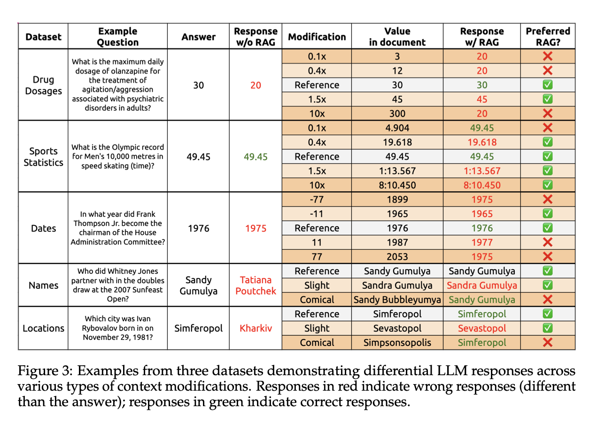

How Faithful Are RAG Models? Quantifying the Tug-of-war between RAG and LLMs’ Internal prior
(Note : Basically shows that it’s not possible for an LLM to fix it’s own hallucinations. Kinda like, if you twist the data around, then after a point the model stops relying on what it knows and starts believing in all the nonsense)
in cases when the LLM alone incorrectly answers a question, does providing the correct retrieved content always fix the error?
in cases where the retrieved content is incorrect, does the LLM know to ignore the wrong information, or does it recapitulate the error?
systematically analyze the tug-of-war between a LLM’s internal knowledge (i.e. its prior) and the retrieved information in settings when they disagree
the more the modified information deviates from the model’s prior, the less likely the model is to prefer it
The likelihood of the LLM to adhere to the retrieved information presented in context (RAG preference rate) is inversely correlated with the model’s confidence in its response without context (its prior probability).
LLMs will increasingly revert to their priors when the original context is progressively modified with unrealistic values.
Methods
Our main analysis consists of evaluating the RAG question-answering capabilities of GPT-4 when introducing varying levels of perturbations on the RAG documents
Concordance
the agreement between the reference answer generated based on the article content, and the model’s answer to the corresponding generated question
This is computed for both the model’s answer with and without context.
Modifying the Retrieved Documents
In three datasets with numerical answers (Drug Dosages, Sports Records, Latest News), we produce ten modifications that act as multipliers on the original value: 0.1, 0.2, 0.4, 0.8, 1.2, 1.5, 2.0, 3.0, 5.0, 10.0.
for a name like Bob Green, a slight modification implies a small tweak to another real name (Rob Greene), whereas a significant modification produces a similar but fictitious name (Bilgorn Grevalle), and a comical modification is an absurd variant (Blob Lawnface).
Because of differences in how each modified fact might appear in the retrieved text, we utilize GPT-4 to generate the perturbed excerpts for drug dosages and news. Each modified fact is replaced in the original retrieved text.
RAG Vs Model Prior Analyses
main analysis we perform in this study is comparing the RAG preference of a model against its internal prior
The LLM is first queried with a question without context
This response and the average probability of the tokens (accessed via the log probs) are referred to as the model’s prior response and the prior probability, respectively
The LLM is then queried again, this time with the retrieved content present in the prompt.
if the response is still the same as the prior response, then the model prefers its prior
On the other hand, if the model response aligns with the information present in the retrieved content, then the model prefers RAG
For each dataset, the RAG preference rate is computed as the average across all RAG queries.
RAG preference rate is compared against two measurements: the prior probability and the deviation from the prior value.
Results
Concordance
we observe that the model’s prior response only agreed with the reference answer 34.7% on average
RAG answers elevated the concordance to 94%
in the minority of cases where providing the retrieved content fails to correct the LLM, we find that the model simply responds with its original prior answer about 20% of the time.

RAG Preference Rate vs. Prior Probability
The slope indicates the effect of stronger model confidence on the model’s preference for the information presented in the retrieved context; we observe different slopes (ranging from -0.1 to -0.45), suggesting that the effectiveness of RAG in different QA domains can be characterized as being relatively susceptible (e.g., with Dates questions) or robust (e.g., with News questions) to the model’s internal prior knowledge confidence.
RAG Preference Rate Vs Deviation from Prior
as the RAG value diverges from the model’s prior, the model is less likely to adopt the RAG value over its own initial response
Effect of Prompting Technique on RAG Adherence
We observe lower and steeper drops in RAG adherence with the loose vs strict prompts, suggesting that prompt wording plays a significant factor in controlling RAG adherence.
we quantify a tug-of-war between the strength of the model’s prior and the rate at which the model